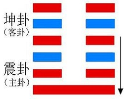
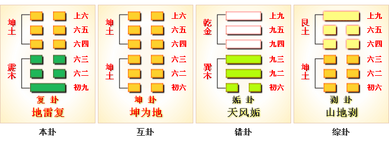
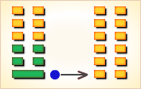
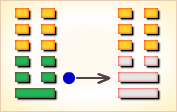
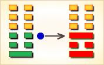

复卦展示“复”形势下各种变化的可能性，“复”（fù），反复。
复卦的代号是4:0，主卦是震卦，卦象是雷，阳数是4；客卦是坤卦，卦象是地，阳数是0。
主方面临发展好机会，应当坚韧不拔反复探索，摸索经验，寻求正确方向。
图中，红色表示当位的爻，天蓝色表示不当位的爻，箭头表示有应。
复卦，地雷复，寓动于顺。 这个卦是异卦（下震上坤）相叠。震为雷、为动；坤为地、为顺，动则顺，顺其自然。
复卦，阐释恢复的原则。恢复的原则，必须根绝过去的错误，重新回复到善道。 恢复的法则，应当从小的过失开始，过失尚未严重之前，及时反省改善，否则积重难返。
《象》曰：马氏太公不相合，世人占之忧疑多，恩人无义反为怨，是非平地起风波。 这个卦是异卦（下震上坤）相叠。震为雷、为动；坤为地、为顺，动则顺，顺其自然。 动在顺中，内阳外阴，循序运动，进退自如，利于前进。
《复》卦谈的是回复，实际上谈的就是改正错误之道。 在此一卦里，其作者论述了回复的“亨通”、“无疾”、“无咎”； 谈论了只要“不远复”，便“无祗悔”；也颂扬了“敦复”的“无悔”；亦肯定了屡犯屡改的“频复”； 并特别提出与指责了凶险异常的、若“用行师”，则“终以大败”，若用“以其国”，则有“君凶”亡国的迷途不知返的“迷复”。
这种坦诚的改正错误的态度，不要说出现在远在殷周之际的君王口中，就是在殷周之后至近代史的历代君王中，这一种见识与态度亦实属罕见的。
复：亨。
何妥曰：复者，归本之名。
群阴剥阳，至于几尽，一阳来下，故称反复。
阳气复反，而得交通，故云“复亨”也。
虞翻曰：谓出震成乾，入巽成坤。坎为疾，
十二消息，不见坎象，故“出入无疾”。
兑为朋，在内称来；五阴从初，初阳正息而成兑，
故“朋来无咎”矣。反复其道，七日来复。
案：易轨：一岁十二月，三百六十五日四分日之一。
以坎、震、离、兑四方正卦，卦别六爻，爻生一气。
其余六十卦，三百六十爻，爻主一日，
当周天之数，余五日四分日之一，以通闰余者也。
剥卦阳气尽于九月之终，至十月末，纯坤用事。
坤卦将尽，则复阳来。隔坤之一卦六爻。
为六日。复来成震，一阳爻生，为七日。
故言“反复其道，七日来复”。是其义也。
天道玄邈，理绝希慕，先儒已论，
虽各指于日月，后学寻讨，犹未测其端倪。
今举约文，略陈梗概，以候来悊，如积薪者也。
利有攸往。
虞翻曰：阳息临成乾，小人道消，君子道长，故“利有攸往”矣。
《彖》曰：复亨，
虞翻曰：阳息坤，与垢旁通。刚反交初，故“亨”。
刚反动，而以顺行，
虞翻曰：刚从艮入坤，从反震，故曰“反动”也。
坤顺震行，故“而以顺行”。
阳不从上来反初，故不言刚自外来。
是以明不远之复，入坤出震义也。
是以出入无疾，朋来无咎。
侯果曰：阳上出，君子道长也。阴下入，小人道消也。
动而以行，故“出入无疾，朋来无咎”矣。
反复其道，七日来复，天行也。
虞翻曰：谓乾成坤，反出于震而来复，阳为道，故“复其道”。
刚为昼日。消乾六爻。为六日。刚来反初，故“七日来复，天行也”。
侯果曰：五月天行至午阳复而阴升也；十一月天行至子，阴复而阳升也。
天地运往，阴阳升复，凡历七月，故曰“七日来复”。此天之运行也。
豳诗曰：一之日觱发，二之日栗烈。
一之日，周之正月也；
二之日，周之二月也。则古人呼月为日明矣。
利有攸往，刚长也。
荀爽曰：利往居五，刚道浸长也。
复，其见天地之心乎。
虞翻曰：坤为复。谓三复位时，离为见，坎为心。
阳息临成泰，乾天坤地。故“见天地之心”也。
荀爽曰：复者，冬至之卦。阳起初九，为天地心。
万物所始，吉凶之先，故曰“见天地之心”矣。
《象》曰：雷在地中，复。先王以至日闭关，商旅不行，后不省方。
虞翻曰：先王谓乾初。至日冬至之日。坤阖为闭关。
巽为商旅，为近利市三倍，姤巽伏初，故商旅不行。
姤《象》曰：后以施命诰四方。
今隐复下，故后不省方，复为阳始，姤则阴始。
天地之始，阴阳之首。
已言先王，又更言后，后，君也。
六十四卦，唯此重耳。
宋衷曰：商旅不行，自天子至公侯，不省四方之事，
将以辅遂阳体，成致君道也。制之者，王者之事。
奉之者，为君之业也。故上言先王而下言后也。
初九：不远复，无祗悔，元吉。
崔觐曰：从坤反震，而变此爻，不远复也。
复而有应故获“元吉”也。
《象》曰：不远之复，以修身也。
侯果曰：祗大也。往被阴剥，所以有悔。
觉非远复，故无大咎。以此修身，颜子之分矣。
六二：休复，吉。
《象》曰：休复之吉，以下仁也。
王弼曰：得位居中。比初之上，而附顺之下，仁之谓也。
既处中位，亲仁善邻，复之休也。
六三：频复，厉，无咎。
虞翻曰：频蹙也。三失位，故“频复，厉”。
动而之正，故“无咎”也。
《象》曰：频复之厉，义无咎也。
侯果曰：处震之极，以阴居阳，惧其将危，
频蹙而复，履危反道，义亦无咎也。
六四：中行独复。
《象》曰：中行独复，以从道也。
虞翻曰：中谓初。震为行。
初一阳爻，故称“独”。
四得正应初，故曰“中行独复，以从道也”。
俗说以四位在五阴之中，而独应复，非也。
四在外体，又非内象，不在二五，何得称“中行”耳？
六五：敦复，无悔。
《象》曰：敦复无悔，中以自考也。
侯果曰：坤为厚载，故曰“敦复”。
体柔居刚，无应失位，所以有悔。
能自考省，动不失中，故曰“无悔”矣。
上六：迷复，凶、有灾眚。
虞翻曰：坤冥为迷，高而无应，故“凶”。
五变正时，坎为灾眚，故“有灾眚”也。
用行师，终有大败，以其国君凶，
虞翻曰：三复位时，而体师象，故“用行师”。
阴逆不顺，坤为死丧，坎流血，故“终有大败”。
姤乾为君灭藏于坤，坤为异邦，故“国君凶”矣。
荀爽曰：坤为众，故“用行师”也。谓上行师，而距于初。
阳息上升，必消群阴，故“终有大败”。
国君，谓初也。受命复道，当从下升。
今上六行师，王诛必加。故“以其国君凶”也。
至于十年不克征。
虞翻曰：坤为至，为十年。
阴逆坎临，故“不克征”。
谓五变设险，故帅师败丧，君而无征也。
何妥曰：理国之道，须进善纳谏。
迷而不复，安可牧民？以此行师，必败绩矣。
败乃思复，失道已远。虽复十年乃征，无所克矣。
案：坤为先迷，故曰“迷复”。
坤又为师象，故曰“行师”。
坤数十，十年之象也。
《象》曰：迷复之凶，反君道也。
虞翻曰：姤乾为君，坤阴灭之，以国君凶，故曰“反君道”也。
《序卦》曰：复则不妄矣，故受之以无妄。
崔觐曰：物复其本，则为成实，故言复则无妄矣。
复①：亨。出入无疾②，朋来③无咎：反复其道④。
七日来复⑤利有攸往。
初九，不远复⑥，无祗诲⑦，元吉。
六二，休复⑧，吉。
六三，频复⑨，厉；无咎。
六四，行独复⑩。
六五，敦复⑾，无悔。
上六，迷复⑿，凶，有灾眚⒀。
用行师，终以大败；以其国，君凶。至于十年不克征⒁。
注释：
① 复：六十四卦卦名之一。乃论述迷途知返更正错误之卦。
② 出入无疾：“出入”，走出去（指错）又返回来（指更正）。
“疾”，灾祸。此句指办错事又返回更正，这并没有灾祸。
③ 朋来无咎：“朋”，多次。“来”，亦即“复”。
此句有如“六二”爻的“频复，无咎”的含义，
是说多次返复更正错误也无灾祸。
④ 反复其道：“反”，即同“返”。
如《国策·卫策》“智伯果起兵而袭卫，至境而反。”
此句是说返回复归其正道。
⑤ 七日来复：“七日”并非一个特定日期，
此句乃与“初九”爻的“不远复”相对而言，实即“近复”之义。
⑥ 不远复：指返复更正错误的时间与空间没有拉的太长。
⑦ 无祗诲：“祗”(zhi指)，乃出现之义。此句指不会出现后悔。
⑧ 休复：“休”，吉。很吉祥的返回复归。
⑨ 频复：频繁地犯错误又频繁地更正错误。
⑩ 中行独复：“中行”，不偏不倚。
此句指不偏不倚的独立进行更正错误。
⑾ 敦复：诚实敦厚地进行更正错误。
⑿ 迷复：指对犯的错误执迷不悟，不愿更正。
⒀ 灾眚（sheng省）：灾异。
⒁ 不克征：“克”，胜任。“不克征”，指不能胜任征伐的使命。
初九：不复远，无只悔，元吉。
《象》曰：不远之复，以修身也。
“祗”与适相同，往、至的意思。
“初九”是一阳复来这一卦的主爻，
在卦的开始，象征事物在刚开始时，
就是有过失，也不会严重，能够改善；
所以说；不要走远就返回。
这一爻，说明在恢复时期，要及早改过，以修身的意思。
六二：休复，吉。
《象》曰：休复之吉，以下仁也。
“休”是美、善、喜、庆的意思，如休咎、休戚等。
“六二”柔顺中正，在“初九”的近邻，
正如“象传”所说：向下附合仁德的“初九”具备返回善的美德，所以吉祥。
这一爻，说明在恢复时期，应当崇高完美。
六三：频复，厉无咎。
《象》曰：频复之厉，义无咎也。
“六三”阴柔，不中不正，又在内卦“震”亦即动的极点；
所以，把持不定，频频犯错，又频频改过，
屡屡失败，当然危险，但每次又知道改过；
所以“象传”说：应当无咎。
这一爻，说明恢复应当慎重，不可一错再错。
六四：中行独复。
《象》曰：中行独复，以从道也。
“行”的本义是道路，“中行”与中途相同。
“六四”被包围在群阴中，但得正，又祗有他单独与“初九”相应，
象征与一群为非作歹的伙伴，在前进的中途，独自返回。
“象传”说：这是为了顺从正道。
这一“爻辞”没有吉或凶的断语。
因为在复卦，阳刚还非常微弱，
还不是能够有所作为的时机，吉凶还难以判断。
然而，当在道义上不得不有所为时，吉凶就应当置之度外了。
汉代的董仲舒说：“仁人正其义，不谋其利；明其道，不计其功。”
剥卦“六三”与复卦“六四”的爻辞，寓意就在于此。
这一爻，说明在恢复时期，吉凶未定，必须坚持原则，为所当为。
六五：敦复，无悔。
《象》曰：敦复无悔，中以自考也。
“敦”即厚。“六五”在外卦“坤”的顺中得中，因而，中庸柔顺；
又在尊位，当此返复的时刻，象征是笃守原则，
返回正道的人，当然不会有后悔。
这一爻，说明恢复必须择善固执。
上六：迷复，凶，有灾眚。
用行师，终有大败，以其国君，凶﹔
至于十年，不克征。
《象》曰：迷复之凶，反君道也。
“上六”阴柔不正，在复卦的极点，
象征到最后还不能迷途知返，必然凶险，天灾人祸相继而来。
这时如果有军事行动，会大败，累及国君，
一直到十年之久，还不能讨伐敌人。
这一爻，说明大势已经到恢复时期，依然执迷不悟，必然凶险。
此卦由雷下地上组成。 卦辞的“复：亨。出入无疾，朋来无咎：反复其道。七日来复，利有攸往”， 第一句是说作为更正错误的返复之卦，它本身亨通。 第二句是说一个人犯错误如同走出去而又能更正错误如同走回来，那就没有灾祸， 一个人能多次犯错误又能多次更正错误，这也无有灾祸：这就是《复》卦的返回复归其正道的道理。 第三句是说犯错误的时空只要不拉的太长，仅只有短短的七日便能更正复归，这样便利于前去办事。
在复卦的结构和卦爻辞图中，有一个箭头，从第四爻指向第一爻，这两条爻都是红色，表示当位的爻，既当位又有应，是对主方有利因素，客方的消极被动是主方积极发展的好机会。其它的四条爻都没有有应关系，对于主方来说都是潜在因素，其中，第二爻和第六爻是潜在的有利因素，主方素质不佳是谋求发展的动力，客方的随和态度有可能便于实现主方意图，但是有二个潜在不利因素，一个是第三爻，主方态度随和，一个是第五爻，客方素质不佳。第三爻是第二爻的补充，这两条爻都是阴爻，表示主方素质极差，力量极薄弱，缺乏发展实力。第五条是阴爻，表示客方素质不佳，加之第六爻也是阴爻，客方素质也极差，客方极贫乏，没有可以补益主方的东西，在这种情况下，主方只有积极性是不够的，必须反复探索，摸索经验，寻求发展方向。
卦辞中说“反复其道，七日来复”，强调主方须要反复探索。如果删去爻辞中的判断辞，再略去爻的名称，可以看出爻辞是一首完整的关于反复探索的散文诗：
（在前进的道路上）走不远就回头。
休整以后再反复前进。
频频地反复探索。
不左不右，在路的中间行走，独自反复探索。
敦厚地反复探索。
（小心啊！）迷失返回道路就有灾祸。行军中迷失道路，
终有大败，对于一国君主十分凶险，以致出征十年不能取胜。
下面逐条说明卦爻辞。
〖原文〗亨。出入无疾，朋来无咎；
反复其道，七日来复。利有攸往。
〖译文〗顺利。出入没有障碍，朋友来无所怪罪；
反复探索道路，七日来回。利于有所前进。
〖解说〗这是复卦卦辞。
“亨”（heng）顺利：万事亨通。
“疾”（ji）病：疾病。
“咎”（jiu）罪责：引咎自责。
“攸”（you）助词，相当于“所”：性命攸关。
这个卦有四个爻当位，一爻与四爻有应。
一爻代表主方的积极行动，四爻是阴爻，
客方对主方顺从，所以“顺利”。
客卦的三条爻中，四爻有应，六爻当位，
综合来看，客方没有对主方不利因素，所以“出入无疾”。
“朋”指客方，四爻应一爻，“朋来”。一爻当位有应，“无咎”。
“亨。出入无疾，朋来无咎”概括当前主方所处形势。
“出入无疾”，客方对主方没有明确要求和压力，主方向什么方向走？
需要反复探索，“反复其道”。“七日”是个比喻，描述一个周期。
可能古时候有7天一次的集市，“七日来复”补充“反复其道”的意思。
“反复其道，七日来复”建议主方耐心坚韧不拔地反复试探。
“利有攸往”是判断词。在顺利形势下，
如果主方坚韧不拔反复试探，则利于有所前进。
暗示，尽管形势顺利，如果主方不耐心，
不坚韧不拔地反复试探，则不利于有所前进。
重要的是要坚韧不拔地反复试探。
〖原文〗不远复，无祗悔，元吉。
〖译文〗行不远就返回，没有严重悔恨，很吉利。
〖解说〗这是复卦第一爻爻辞，
阳，表示主方积极主动地谋取和扩大自己的利益，
比如说，创新、创业、投资、进攻、求职、示爱，等等。
“祗”（zhi）恭敬有礼的样子：祗仰。
“元”（yuan）为首的：元帅。
爻辞不仅考虑这条爻的状态，还考虑整个形势。
因此，爻辞建议主方“不远复”，行不多远，就返回来。
这样多次反复，稳扎稳打，步步为营，就“无祗悔”，
没有严重的悔恨，就“元吉”，很吉利。
“无祗悔”指不至于在某些事情上犯严重的错误，
“元吉”指在总的进程上很吉利。
“不远复”是“无祗悔”和“元吉”的条件。
如果急躁冒进，就有可能犯严重错误而“有祗悔”，甚至不“吉”。
〖结构分析〗第一爻是主卦下爻，其位置是阳位，
这条爻是阳爻，阳爻在阳位，当位，并且与四阴有应。
当位，表明主方积极主动有可能利于主方开拓发展，
是潜在的对主方有利因素；
有应，表明客方消极被动，
正好是主方积极主动谋求发展的好机会，所以爻辞说“元吉”。
〖原文〗休复，吉。
〖译文〗休止而反复，吉利。
〖解说〗这是复卦第二爻爻辞，
阴，表示主方素质不佳，
比如说，资金缺乏、地位底下、实力薄弱、教育程度低等等。
“休”（xiu）歇息：休息。爻辞告诉主方在反复试探过程中，
要休止下来，冷静反思，吸取经验教训，
而后回过头来，再反复试探，逐渐前进。
“吉”是判断词。“休复”是条件。
先休止再重复，才吉利。
如果只是重复而没有休止，则不一定吉利。
〖结构分析〗第二爻是主卦中爻，其位置是阴位，
这条爻是阴爻，阴爻在阴位，当位，不过与五阴不有应。
当位，表明主方素质不佳，
有谋求发展的积极性，是潜在的对主方有利因素；
不有应，表明客方素质也不佳，主方很难从客方获益，
这潜在因素没有成为真正的对主方有利因素。
尽管这有利因素是潜在的，由于主方行动积极，
而客方消极被动，主方很可能取得发展，所以爻辞说“吉”。
〖原文〗频复，厉无咎。
〖译文〗屡次反复，艰苦但无所怪罪。
〖解说〗这是复卦第三爻爻辞，
阴，表示主方态度随和。
“频”（pin）屡次：捷报频传。
“厉”（li）严肃：雷厉风行。
由于主方素质过差，不得不随和，在遇到困难的时候，
很可能态度不坚定，虽有积极行动，未必能持久。
这是主方的主要缺点，是对主方不利因素。
但是，爻辞极简练，避免不必要评论而直接给主方指出努力的方向。
“频复”，告诉主方要经得住困难考验，屡次反复。
一次不成功，再试一次，屡试不停，直到取得明显成绩为止。
“厉”，告诉主方屡次重复试探是辛苦的，尤其客方态度也是阴，
客方过于宽松，对主方没有明确要求，
使主方对客方态度捉摸不定，行动困难。
“无咎”，对主方无所怪罪。“厉无咎”是判断词，“频复”是条件。
如果主方屡次反复试探，尽管辛苦，但是对主方无可怪罪。
爻辞暗示，如果不“频复”，在困难面前动摇，主方就要引咎自责。
〖结构分析〗第三爻是主卦上爻，其位置是阳位，
这条爻是阴爻，阴爻在阳位，不当位，并且与六阴不有应。
不当位，表明主方的随和态度有可能使主方受到客方压抑，
是潜在的对主方不利因素；不有应，表明客方态度也随和，
客方不求压抑主方，这潜在因素没有成为真正的对主方不利因素，
所以卦爻辞说“厉无咎”。而且，第三爻是对第二条的补充，
第二条是阴，第三条也是阴，这表示主方素质很差，
主方的随和态度是素质过差的必然结果，也不能怪罪主方。
〖原文〗中行独复。
〖译文〗中间走，独自反复。
〖解说〗这是复卦第四爻爻辞，
阴，表示客方消极被动，比如说，
防守、退却、不想冒险、
不想探索或开辟新的发展领域、只求保持现状，等等。
爻辞中既没有“有利”也没有“不利”之类判断词，
而是直接给出对主方的建议。
主方需要耐心谨慎走中间，不靠右也不靠左。
走在河边上，不要紧贴边沿，要走中间。走在崎岖道路上，走中间。
留心脚下，看清左右。由于没有客方强力支持，
主方不能指望客方同行，不能指望客方协助。
主方必须依靠自己的信念和决心，独自反复探索。
〖结构分析〗第四爻是客卦下爻，其位置是阴位，
这条爻是阴爻，阴爻在阴位，当位，并且与一阳有应。
当位，表明客方消极被动有可能是主方发展的好机会，
是潜在的对主方有利因素；
有应，表明客方消极被动正好便于主方积极主动地谋求发展，
这潜在因素成了真正的对主方有利因素。
尽管存在这种有利因素，由于主方素质极差，
同时客方既被动素质又极差，主方不可能依靠客方，
只能自己谨慎探索，所以爻辞只是建议主方“中行独复”，没有加判断辞。
〖原文〗敦复，无悔。
〖译文〗敦厚地反复探索，没有悔恨。
〖解说〗这是复卦第五爻爻辞，
阴，表示客方素质不佳，
比如说，资金缺乏、地位底下、实力薄弱、教育程度低，等等。
“敦”（dun）诚实：敦厚；诚恳：敦请。
基于主客双方形势，主方在积极行动的时候，需要反复探索，不可冒进。
根据客方素质，第五爻爻辞指出，主方在反复探索的时候，对客方要敦厚。
只有对客方敦厚，在反复中才不至于悔恨，否则，会悔恨的。
〖结构分析〗第五爻是客卦中爻，其位置是阳位，
这条爻是阴爻，阴爻在阳位，不当位，又与二阴不有应。
不当位，表明客方的素质不佳，有可能向主方索取补益，是潜在的对主方不利因素；
不有应，表明主方素质也不佳，不可能给予客方好处，
这潜在因素没有成为真正的对主方不利因素，爻辞说“无悔”，
在双方素质都不佳的情况下，主方既没有损失，也没有收益，只是没有悔恨。
〖原文〗迷复，凶，有灾眚。
用行师，终有大败；
以其国君凶，至于十年不克征。
〖译文〗迷失方向反复探索，凶，有灾祸，
用于行军打仗，终有大败；
对于他的国君凶，以至于征战十年不能攻克对方。
〖解说〗这是复卦第六爻爻辞，
阴，表示客方态度随和。
“眚”（sheng）眼睛长白翳；灾祸。
这条爻辞虽长，但没有生奥的字，不过句子很简练，不完全。
谁迷？谁行师？谁是国君。迷是主方迷。
虽然这条爻属于客卦，代表客方态度，
但是，这是整个卦的一部分，
卦爻辞是以主方为基点，所以“迷”指主方。
复，指主方反复探索，而不是指客方反复探索。
迷，指主方在反复过程中迷失方向。
导致迷失方向的客观因素是客方态度，
客方态度是阴，太随和，不明朗，难以着摸。
导致迷失方向的主观因素是主方态度，
主方态度是阴，很谦让，很随和，容易被误导。
行师是主方行师。行师是个比喻，说明主方积极行动，不一定指具体战争。
“用行师，终有大败”形象地说明由于迷失方向，主方的积极行动必将失败。
国君是主方，主方迷失了方向，所以爻辞说“以其国君凶”。
“至于十年不克征”形象地说明由于主方迷失方向，
以至导致长期不成功，长期浪费时间，没有效果。
爻辞的针对性很强，提出了给主方的建议和警告。
〖结构分析〗第六爻是客卦上爻，其位置是阴位，
这条爻是阴爻，阴爻在阴位，当位，不过与三阴不有应。
当位，表明客方态度随和，有可能让主方按自己的意愿办事，
是潜在的对主方有利因素；不有应，表明主方态度也随和，
并不要求客方接受主方意愿，这潜在因素没有成为真正的对主方有利因素。
由于主方积极主动谋求发展，而客方消极被动，是主方发展的好机会，
但是，主方态度不坚强，不能利用当前的好形势，错过发展良机，所以爻辞说“凶”。
复①：亨，出人无疾，堋②来无咎，反复其道，七日来复，利有攸往。
【白话】筮得复卦，亨通，出门归来顺利，没有生病，赚了钱回来，
也没有灾难，旅途往返要花七天时间，这利于有所作为。
【注释】① 复：卦名，返，还，归，回。② 堋：假借为“朋”，朋贝。
【讲解】复卦卦图由一个阳刚之爻与五个阴柔之爻组成。
这个阳刚之交在五个阴柔之爻的下面，表示阴柔到了极限，阳刚反回卦中。
夏历十月阴柔极盛，到十一月冬至节，阳刚之气生长于地中，
所以《序卦传》说：“物不可以终剥，剥穷上反下，故受之以复。”
《彖传》说：“复，亨，刚反，动而以顺行，是以‘出入无疾，朋来无咎’。
‘反复其道，七日来复’，天行也。‘利有攸往’，刚长也。复，其见天地之心乎？”
初九：不远复，无提①悔，元吉。
【白话】筮得复卦，占得初九爻，出门不远而归，没有大的悔恨，大吉。
【注释】① 提：假借为“只”。只：大也。
【讲解】复卦以阳刚之爻回归出现于第一爻而得名，
初九位于复卦的初爻，最早得到回归的阳刚之爻，
象征君子失之不远便复归于初，所以没有大的悔恨。
复归那君子修身的正道，所以复有复归人性、复归善良品德等含义。
六二：休①复，吉。
【白话】筮得复卦，占得六二爻，欢欢喜喜归来，吉善美好。
【注释】① 休：欢喜。
【讲解】六二阻柔之爻居于阴柔之位，而且居于下体的中央，
与六四阴柔之爻没有阳刚接应，反比于下爻的初九，
象征人行仁义于下，所以断以吉占。
王弼说：“得位处中，最比于初，上无阳爻，以疑其亲。
阳为仁行，在初之上，而附顺之，下仁之谓也。
既处中位，亲仁善邻，复之休矣。”
六三：编①复，厉，无咎。
【白话】筮得复卦，占得六三爻，频繁地往返，
处于危厉之境，但没有灾难。
【注释】① 编：假借为“频”。
【讲解】六三阴柔之爻处于下体之终，离开初九阳刚之爻较远，
象征人离开正道已经很远了，很难复归人的本性。
然而仍然追求归复人的本性，因而厉而无咎。
六四：中行①独复。
【白话】筮得复卦，占得六四爻，中军单独归来。
【注释】① 中行：中军。
【讲解】六四阴柔之爻，处于下上两体的中间，
又居于复卦五阴爻的中央，所以爻辞用“中行”，
五阴爻仅有六四阴爻独与初九阳刚之爻为正应，所以爻辞为“中行独复”。
六五：敦①复，无悔。
【白话】筮得复卦，占得六五爻，匆匆忙忙回来，但没有大问题。
【注释】① 敦：迫促。
【讲解】六五阴柔之爻居于复卦上体坤卦之中，坤卦品德厚道柔顺，
六五爻居中自守，能复于正道，能复归人性。所以爻辞谓“敦复无悔”。
王弼说：“居厚而履中，居厚则无怨，履中则可以自考，
虽不足以及‘休复’之吉，守厚以复，悔可免也。”
尚六：迷复，凶，有兹省①，
用行师，终有大败，以其国君凶，至十年弗克正②。
【白话】筮得复卦，占得尚六爻，军队不熟悉地形迷路而归，
真是灾难深重，出师就不吉利，用这样的军队打仗是注定要失败的。
这是国君荒淫所致，以至于十年内不能用兵打仗。
【注释】
① 兹省：灾眚。兹，通灾。省，通眚。伤害曰灾，妖祥日眚。
② 弗克：不能。弗，不。克，能。正，假借为“征”。
【讲解】尚六阴柔之爻居于复卦的终点，距离初九阳刚之爻最远，
迷而不能自返于正道，不能复归人的善良的本性，所以祸莫大焉。
用这丧失了人性的疯人去行师打仗，终将大败。
用这丧失了人性的病态心理的人去治理国家，国君必然遭受灾难。
等到造成重大损失时再复归正道则已晚矣。
《象传》说：“迷复之凶，反君道也。”
关键是违背君子之道，丧失了人性。
【原文】
（震下坤上）复①：亨。出人无疾。朋来无咎②。
反复其道，七日来复。利有攸往。
初九：不远复，无祗悔③，元吉。
六二：休复④，吉。
六三：频复⑤，厉，无咎。
六四:中行独复⑥。
六五：敦复⑦，无悔。
上六:迷复，凶。有灾眚⑧。
用行师，终有大败，以其国君，凶。至于十年不克征。
【注释】
① 复是本卦标题。复的意思是往返。全卦内容是讲行旅。
“复”与内容有关，又是卦中多见词，所以用作标题。
② 朋：朋贝，指货币，钱财。
③ 祗：大。
④ 休：美满。
⑤ 频：用作“颦”，意思是皱眉头。
⑥ 中行：中途，半路。
⑦ 敦：匆忙，急迫。
⑧ 眚（sheng）：灾祸，过错。
【译文】
复卦：亨通。外出回家不会生病。赚了钱而没有灾祸。
路上往返很快，七天就可以了。有利于出门。
初九：没走多远就返回来了，没有大问题，大吉大利。
六二：完满而归，吉利。
六三：愁眉苦脸地回来，遇到了危险，却没有灾祸。
六四：独自一人半路返回。
六五：匆忙返回，没有大问题。
上六：迷路难返，凶险，有灾难。
出兵作战，结果将会大败，并连累到国君，凶险。
十年都不能恢复作战能力。
【读解】
《周易》一再讲到外出旅行，
大概因为这事很重要（经商贸易和行军打仗都要外出），同时也有不少困难：
天然的地理障碍，饥渴生病，盗贼打劫，同路人之间的不和，
迷失道路和方向，两手空空而归……
总之，有太多意料之外的不利因素和危险，
全然不像今天的飞机、火车、汽车、轮船那么方便、快捷、安全、舒适。
古人的行路难（李白曾慨叹蜀道难难于上青天）倒让人想起人生一世正如行路，
也有太多意料之外的偶然因素和插曲，否则就不会有“谋事在人，成事在天”一说。
有些事是自己可以控制把握和努力做到的，有些事则超出了个人控制和努力之外；
有些事是意料之中、必然会发生的，有些事则在意料之外、偶然出现；
有政事凭个人努力可以改变，而有些事则要改变人本身。
行路的苦乐忧喜唯有行路人自知，
人生的苦乐忧喜也只有靠自己去体验。
因而，行路和人生都一样，是一种实实在在、真真切切的体验。
重要的是体验的过程，而不是结果。
复：亨，出入无疾，朋来无咎，
反复其道，七日来复，利有攸往。
《彖》日：“复，亨。”
刚反，动而以顺行，是以出入无疾朋来无咎。
“反复其道，七日来复，”天行也。
“利有攸往，”刚长也。
“复，”其见天地之心乎。
《象》曰：雷在地中，复。
先王以至日闭关，商旅不行，后不省方。
复：《说文》，往来也。
往来归复才能验证一切，往来归复才能校正一切，
是以“十分亨通，出入不会有差错，财来不会犯灾咎。
”从而当“反复于其道，七日来往复，所往无不利。”
复，其见天地之心乎。
天的规律是周而复始、循环往复的，
从而达到了普利万物、生生不息和永恒的发展，
故人当效法于天，不断地复核于事，
从而才能校正不良观点和错误倾向，不断前进。
因此有所复才能归复到正常的运转上来，
有所复才能深知当前的状况而作出未来的发展趋势和任务，
有所复才能常常回过头来不断研究和总结出一条可持续发展的道路。
否则只能是臆测，是不切实际的运转了。
《彖》辞说：往来归复，十分亨通。
原因是一切事物只有不断返动阳刚才能总结过去检测未来顺应发展，
一切趋势只有不断时时回过头来加以总结和分析，
才能使出入不会有差错，才不会犯灾咎。
至于说“反复其道，七日来复”，这应该是天之行。
原因是天的规律是周而复始循环往复，
从而达到了普利万物生生不息和永恒的发展，
因此人当效法于天，不断地复核于事，
从而才能校正行为上的错误和不良观点，不断前进。
因此有所复才能见天地之心矣，有所复才能总结过去检测未来矣，
有所复才能为发展过程作出全面的指导矣。
是以所往无不利，刚健而长存，无不亨也。
《象》辞说：雷藏于地，阳春而动，依时往复，这是《复》之象。
上古的君王观此，思事物的发展当有所归复，
以利于为来年和下次做好准备创造条件。
从而在至日闭关，商旅不行，君子也不巡视四方，
作一个总结和搞一个段落，以配天地之道，
以类万物之情，从而分布来年任务，以求长足发展。
如果人类没有或不作总结和不搞段落，那将会是什么样的世界面貌呢，
人们将因此而失去期望、社会将不知进步、世界将一片茫然。
初九：不远复，无只悔，元吉。
《象》曰：不远之复，以修身也。
做事不能只顾为发展而发展，
而当时时加以归复和较对，这样就不会犯上原则性的错误。
这是事业之所以能通顺发展的立足点，是对自身行为的检点。
是以“不远而复，没有只悔，大吉大利”，故君子当以此作为修身的立足点。
六二：休复，吉。
《象》曰：休复之吉，以下仁也。
修善而复，完善而复，十分吉祥。
原因是只有不断地复核、校对、验证，
才能明确一切事理和归正行为上的过错，
从而使天下全面发展、和美发展、仁义发展。
六三：频复，厉，无咎。
《象》曰：频复之厉，义无咎也。
要时时回顾，要时时审核，要时时考核，要时时归复。
艰难呵，只有时时不忘忧患的存在才能归正行为上的过错，
才能向更高层次发展。是以“频复之厉，义无咎也。”
六四：中行独复。
《象》曰：中行独复，以从道也。
行事中正，归在其复。
原因是只有不断复核、考虑、综合，
才能不失其正，才能不失其道，才能归入到正确的轨道上来。
《鬼谷子》说“反可以观往，复可以验来；
反可以知古，复可以知今；反可以知彼，复可以知已”。
往来归复，才能运入正道，才能知己知彼，才能从于其道。
是以“中行独复，以从道也。”
六五：敦复，无悔。
《象》曰：敦复无悔，中以自考也。
敦，厚也。敦厚而复，没有悔吝。
原因是敦厚而复，完善而进，是以还有什么悔吝呢。
故君子当以此作为立足点，时时考察自己的言行是否完善，
自己的举止是否得体，自己的行为是否符合社会道义
，如此则何有其悔，是以当“中以自考也。”
上六：迷复，有灾眚。勿用师，终有大败。
以其国，君凶，至于十年不克征。
《象》曰：迷复之凶，反君道也。
不知往复，忘乎所以，它的行为注定招灾。
如果以这样自大妄为不计后果的态度行师则必招大败，
如不综合考虑以盲目发展的态度治国终招其害。
因此不客观考虑，全面总和，
就无法估计和判断事物的发展趋势，就无法做出准确的决定。
故君子当综合考虑，全面总和，
决不打无把握的仗，也决不做无把握的事。
孙子说过：“主不可以怒而兴师，将不可以愠而致战，
合于利而动，不合于利而止。
怒可以复喜，愠可以复悦，亡国不可以复存，死者不可以复生，
故明君慎之，良将警之，此安国全军之道也。”

复卦坤上震下，为坤宫初世卦。复代表阴阳去而复返，使万物生生不息，预示已逝去的可能会再回来。
循环往复，生机复萌；成功在望，性急即败。
得此卦者，时运好转，顺势而为，谋事可成，但不宜过于急进。
这个卦是异卦（下震上坤）相叠。震为雷、为动；
坤为地、为顺，动则顺，顺其自然。
动在顺中，内阳外阴，循序运动，进退自如，利于前进。
大象：雷在地中振发，喻春回大地，一元始，万象更生。
运势：开运亨通之象，万事不宜急进，按部就班可成。
复：表示重复再来、周而复始之意。
是个状况卦，吉凶未定。
好事会重复，但坏事也会重复再来的。
此卦显现一种循环的状态，可能是好、也可能是坏。
解释：一年复始、万象更新。
特性：为最佳辅佐人才，做事谨慎，调理分明，精企划，组织，
一生财运丰足，乐于助人，排解别人困难，人缘佳。
运势：一阳来复，万事苏伸，不久就会好转。初时不宜急进，脚踏实地则有一本万利、开运亨通之象也。
初九。不远复，无只悔，元吉。
《象》曰：不远之复，以修身也。
初九：出外不远就返回，没有大的过失，大吉大利。
《象辞》说：出外不远就返回，比喻能时时反省，严于修身。
吉：得此爻者，万事如意，经营获利。做官的会位高权重。读书人会取得佳绩。

初九爻动变得第2卦：坤为地。
这个卦是同卦（下坤上坤）相叠，阴性。
象征地（与乾卦相反），顺从天， 承载万物，伸展无穷无尽。
坤卦以雌马为象征。
表明地道生育抚养万物， 而又依天顺时，性情温顺。
它以“先迷后得”证明“坤”顺从“乾”，依随“乾”， 才能把握正确方向，遵循正道，获取吉利。
六二。休复，吉。
《象》曰：休复之吉，以下仁也。
六二：圆满而归，吉利。
《象辞》说：圆满而归之所以吉利，是能够去位让贤。
吉：得此爻者，与人共利，事业兴旺，病者痊愈。做官的遭贬者会复职。

六二爻动变得第19卦：地泽临。
这个卦是异卦（下兑上坤）相叠。
坤为地，兑为泽。
地高于泽，泽容于地。
喻君主亲临天下，治国安邦，上下融洽。
六三。频复，厉，无咎。
《象》曰：频复之厉，义无咎也。
六三：愁眉苦脸地回来，是遇到了危险，知难而退可以无灾祸。
《象辞》说：虽然愁眉苦脸地回来，但已脱离危险，理应没有灾祸。
平：得此爻者，事多反复，阴阳差错，时好时坏。做官的职位不稳定，更变无定。

六三爻动变得第36卦：地火明夷。
这个卦是异卦（下离上坤）相叠。
离为明，坤为顺；离为日；坤为地。
日没入地，光明受损，前途不明。
环境困难，宜遵时养晦，坚守正道，外愚内慧，韬光养晦。
六四。中行独复。
《象》曰：中行独复，以从道也。
六四：中途独自返回。
《象辞》说：中途独自返回，这是返回到道义上来。
平：得此爻者，好运可期，营谋得利。做官的会复职。
六四爻动变得第51卦：震为雷。
这个卦是同卦（下震上震）相叠。
震为雷，两震相叠，反响巨大。
可消除沉闷之气，亨通畅达。
平日应居安思危，怀恐惧心理，不敢有所怠慢， 遇到突发事变，也能安然自若，谈笑如常。
六五。敦复，无悔。
《象》曰：敦复无悔，中以自考也。
六五：经过考察，决定返回，可以无悔。
《象辞》说：经过考察，决定返回，可以无悔，意思是从内心用正道检察自己。
吉：得此爻者，会有积蓄，但要谨防父亲出意外。做官的有升职之机会。
六五爻动变得第3卦：水雷屯。
这个卦是异卦（下震上坎）相叠，
震为雷，喻动；坎为雨，喻险。
雷雨交加，险象丛生，环境恶劣。
“屯”原指植物萌生大地，万物始生， 充满艰难险阻，然而顺时应运，必欣欣向荣。
上六。迷复，凶，有灾眚。用行师，终有大败，以其国君凶，至于十年不克征。
《象》曰：迷复之凶，反君道也。
上六：迷途难返，凶险，有灾祸。筮遇此爻，出兵打仗，终有大败，连累国君遭遇凶险，元气大伤，十年后还不能再举征伐。
《象辞》说：迷途难返遭遇凶险，这是由于君王违反君道。
凶：得此爻者，做事乖张，诸事不顺，静吉动凶。做官的会过于贪婪权力而有损。
上六爻动变得第27卦：山雷颐。
这个卦是异卦（下震上艮）相叠。
震为雷，艮为山。
山在上而雷在下，外实内虚。
春暖万物养育，依时养贤育民。
阳实阴虚，实者养人，虚者为人养。自食其力。